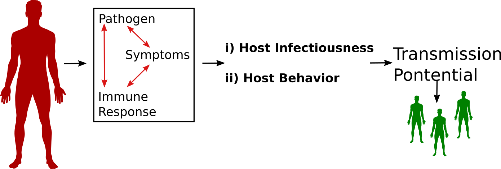
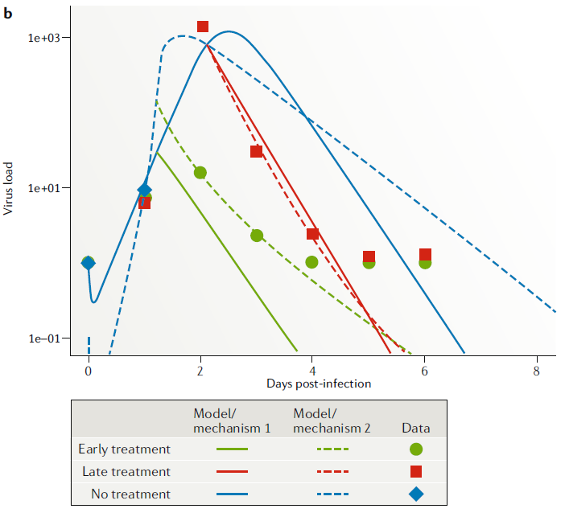
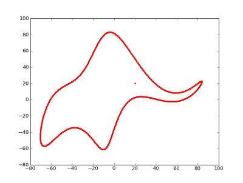

Fitting and multi-scale modeling example
Multi-scale models
Introduction
- Infectious diseases operate on different temporal and spatial scales.
- Building models that connect scales can allow one to answer new questions.
Ways to model interactions across scales
- Static: A within-host model is analyzed/simulated. Results are being fed into a between-host model, which is subsequently being run.
- Dynamic: A within-host model is being simulated inside a between-host model. Requires an ABM for the between-host model, each agent has its own infection model running.
Simple example model
It is easiest to discuss multi-scale models in the context of an example.
Let’s consider the dynamics of an acute viral infection (e.g. influenza) at the within-host and the population level.
Within-host model
At the within host level, we can start with the basic virus model.
\[ \begin{aligned} \dot{U} & = n - d_UU - bUV \\ \dot{I} & = bUV - d_I I \\ \dot{V} & = pI - d_V V - gb UV \\ \end{aligned} \]
Between-host model
- At the population level, we’ll look at the standard SIR model, with compartments being susceptible, infected and infectious, and recovered.
- To avoid confusion, we give all the parameters on the population level model Greek letters.
\[ \begin{aligned} \dot S & = \nu - \mu S - \beta SI \\ \dot I & = \beta S I - \gamma I - \mu I \\ \dot R & = \gamma I - \mu R \\ \end{aligned} \]
Linking models
- Assume transmission rate is linked to virus load through some function that maps virus to between-host transmission \(\beta = f(V)\).
\[ \begin{aligned} \dot S & = \nu - \mu S - \mathbf{f(V)} SI \\ \dot I & = \mathbf{f(V)} S I - \gamma I - \mu I \\ \dot R & = \gamma I - \mu R \\ \end{aligned} \]
\[ \begin{aligned} \dot{U} & = n - d_UU - bUV \\ \dot{I} & = bUV - d_I I \\ \dot{ \mathbf{V} } & = pI - d_V V - gb UV \\ \end{aligned} \]
Now the between-host model is connected to the within-host model through the variable \(V\).
Ways to link the scales/models
- For a chronic infection model, we can compute virus at steady state (\(V_s\)) as function of model parameters.
\[\beta = kV_s\]
\[V_s = \frac{n(p-d_Ig)}{d_Id_V}-\frac{d_U}{b}\]
- Changes in the within-host parameters now impact the between-host dynamics.
Ways to link the scales/models
- For an acute infection model, we could assume transmission is proportional to total virus load.
\[ \beta = k \log \left( \int_0^D V(t) dt \right) \]
- Again, changes of the within-host parameters impact the between-host dynamics. But we don’t have an explicit mathematical expression.
Using the linked models to answer a question
We could now answer questions such as: Does increased virus infection rate (parameter \(b\)) lead to a larger outbreak on the population level?
For a chronic infection, we can see it from the equation: \[V = \frac{n(p-d_Ig)}{d_Id_V}-\frac{d_U}{b}\]
For an acute infection, we would need to run simulations.
Other ways to link the scales/models
- We could also assume that the duration of the infectious period (\(1/\gamma\)) is determined by the time at which \(V\) in the within host model drops below a certain level (e.g. 1 virion).
- To investigate this:
- Set within-host model parameters. Run model. Determine time at which \(V<1\) from time-series.
- Use that time as \(1/\gamma\) in the between-host model.
\[ \begin{aligned} \dot S & = \nu - \mu S - \beta SI \\ \dot I & = \beta S I - \gamma I - \mu I \\ \dot R & = \gamma I - \mu R \\ \end{aligned} \]
Closing the loop
- So far, we assumed that the lower scale (within-host) affects the higher scale (between-host).
- One could also consider the population level dynamics to impact the within-host level. E.g. if we had a new (flu) strain spreading on the population level which can partially avoid pre-existing immunity, it might impact the within-host dynamics.
- It gets complicated. One either needs to break down the pieces and look at them individually, or put them all in one large simulation.
Fitting mechanistic models to data
Model fitting
- We build models based on what we assume/know goes on in a specific system.
- We can use models to explore and make predictions.
- At some point, we need to bring our model results in contact with data to see how our model performs.
- Ideally, the whole process is iterative.
- Main uses of model fitting is to test hypotheses and estimate parameters.
Hypothesis testing with non-mechanistic models
- We usually test hypotheses by collecting data and performing statistical tests to see if there is a pattern (H1) or not (H0).
- The statistical tests can discriminate between no pattern and some kind of pattern/correlation.
- If data was collected properly, one can often conclude that there is a causal link. But one can’t say much about the mechanisms leading to the observed patterns.
Hypothesis testing with mechanistic models
- With mechanistic simulation models, we can directly test hypotheses/mechanisms: We can formulate different models, each representing a set of hypotheses/mechanisms. The quality of fit of each model to the date lends support to specific models/mechanisms.
- The mechanism(s) of the best fitting model are more likely to be correct than those of the less good fitting models.
Model fitting example
Investigate the mechanism of drug action of neuraminidase inhibitors against influenza.
The Question: What is the mechanism of action of neuraminidase inhibitors, is it reducing virus production of infected cells or infection of uninfected cells?
The approach: build models for each mechanism/hypothesis, fit to data and evaluate.
Model/Hypothesis 1
Neuraminidase reduces infection rate of uninfected cells.
\[ \begin{aligned} \dot{U} & = - b{\bf(1-f)}UV \\ \dot{I} & = b{\bf(1-f)}UV - d_I I \\ \dot{V} & = pI - d_V V - gb{\bf(1-f)} UV \\ \end{aligned} \]
Model/Hypothesis 2
Neuraminidase reduces rate of virus production by infected cells.
\[ \begin{aligned} \dot{U} & = - bUV \\ \dot{I} & = bUV - d_I I \\ \dot{V} & = p{\bf (1-e)}I - d_V V - gb UV \\ \end{aligned} \]
Model fits

Parameter estimates
- By fitting models, we can also estimate biologically meaningful parameters.
- The parameters in our models often represent important biological quantities, fitting returns estimates for the parameter values.
- For the example, the best-fit estimate e=0.98 means the drug reduces virus production by 98%.
\[ \begin{aligned} \dot{U} & = - bUV \\ \dot{I} & = bUV - d_I I \\ \dot{V} & = p{\bf (1-e)}I - d_V V - gb UV \\ \end{aligned} \]
Parameter estimates
- One can estimate parameters using just a single model. This allows one to test some mechanisms, e.g. we could use one of the models we just looked at and ask if the drug has an effect (e>0) or not (\(e\approx 0\)). Fitting a single model and looking at the value of \(e\) could answer this.
- To test more complex hypotheses/mechanisms, one often needs several distinct models. If one of the tested models is deemed a good approximation of the real system, the estimates for its parameters can be consider meaningful.
Fitting comments
- Fitting mechanistic models is conceptually the same as fitting regression models, but technically more challenging.
- If a non-mechanistic model doesn’t fit well, we mainly just learned that we need a better model.
- If a mechanistic model that was built based on our best knowledge doesn’t fit well, we have learned something useful!
Fitting comments
- If a model is best among a group of models, it can still be bad.
- Complex models with many parameters can provide good fits for spurious reasons.
- It is important to keep models simple to prevent overfitting.
With four parameters I can fit an elephant, and with five I can make him wiggle his trunk.
John von Neumann

Fitting - practice
- The Influenza Drug model in DSAIRM shows the example we just went through. It doesn’t go into details of fitting.
- The apps in the Model fitting section of DSAIRM teach some concepts of model fitting.
A worked example
Setup
- Let’s do a pretend modeling project covering the topics we just discussed.
- Our question is: What is the population-level impact of treating individuals at various times post infection with neuraminidase inhibitors?
Hands-on exercise 1
- Use the Influenza Drug Model app, fit model 2 to the data and determine the best-fitting parameter values.
- Write code that loops over the treatment starting time, txstart, (say from 0.1 days to 2 days), and for each value of txstart, runs the
simulate_virusandtx_odemodel and computes the log of the total virus load: \[V_{tot} = \log \left( \int_0^D V(t) dt \right)\] - All other model parameters should be at the estimated best fit values.
Hands-on exercise 2
- Install the ‘DSAIDE’ package.
- Write some code that loops over the parameter \(\beta\), runs the
simulate_SIR_model_odemodel and computes total outbreak size for each value of \(\beta\). - Assume that \(\beta\) is proportional to the log of the within-host virus load: \[\beta = \beta_0 V_{tot}/V_{max}\]
- \(V_{max}\) is the total virus load in the absence of treatment. You can get that by running the within-host model for some txstart value that’s the same as the final time.